AuthenticAI-enhanced
fp-auth-001
Dinner laugh
restaurant dinner · warm, relaxed, social
- Best for
- Social Feed, Social Story, Newsletter
- Avoid
- PR, Media Kit, Speaker Materials
- Format
- Candid · 1086x1448 · Portrait
Final public-use photos only. Authentic camera moments remain authentic after enhancement. Fully synthetic scenes retain an AI-generated label.
Showing 25 approved photos
restaurant dinner · warm, relaxed, social
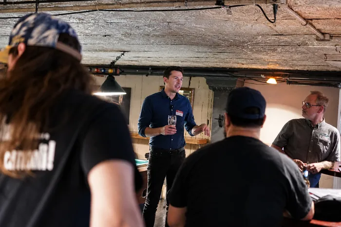
Preview unavailable. Open the high-resolution file.small group workshop · facilitating, conversational, active
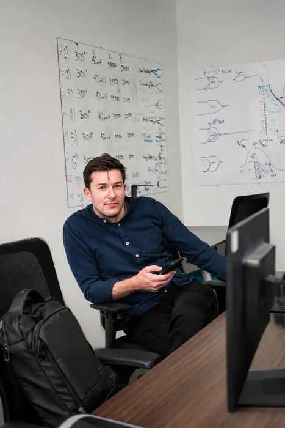
Preview unavailable. Open the high-resolution file.workshop laptop station · focused, candid, technical
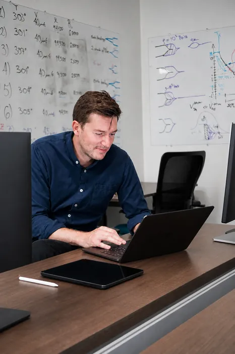
Preview unavailable. Open the high-resolution file.technical workspace · focused, capable, candid
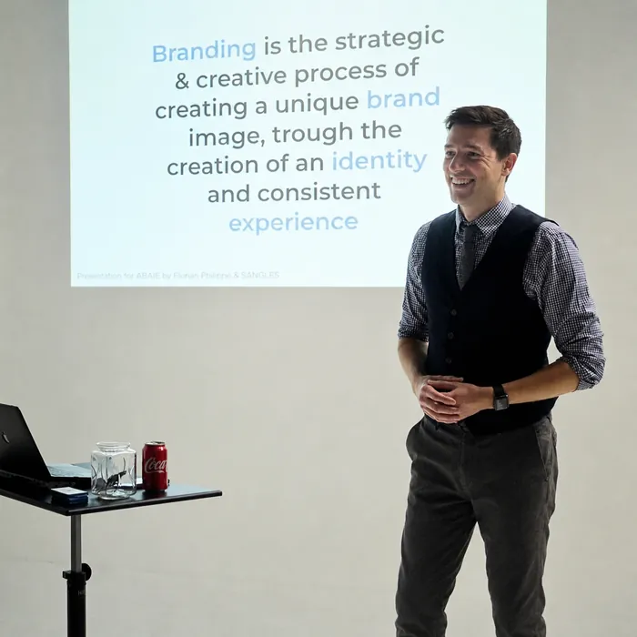
Preview unavailable. Open the high-resolution file.projected branding talk · documentary, authoritative, atmospheric
home guitar room · relaxed, personal, creative
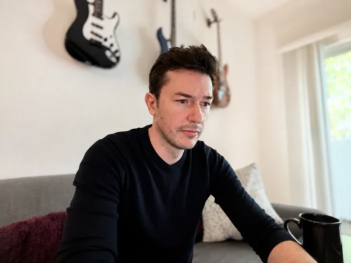
Preview unavailable. Open the high-resolution file.home guitar room · observant, relaxed, thoughtful
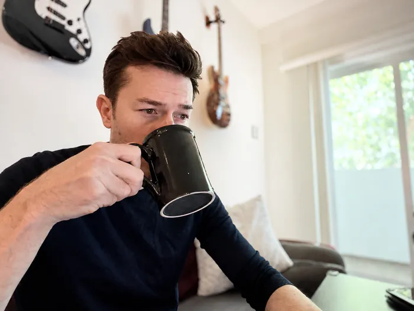
Preview unavailable. Open the high-resolution file.home desk with guitars · casual, reflective, personal
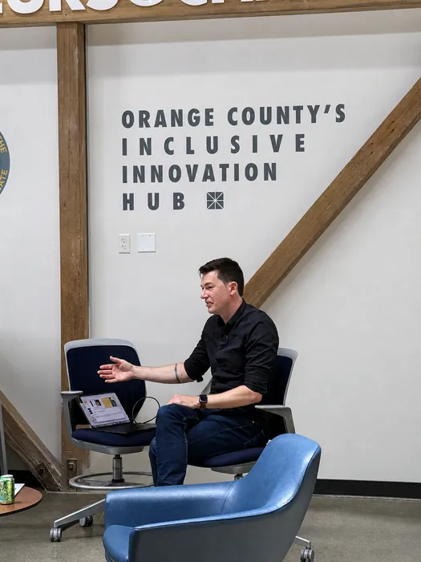
Preview unavailable. Open the high-resolution file.innovation hub workshop · listening, collaborative, candid
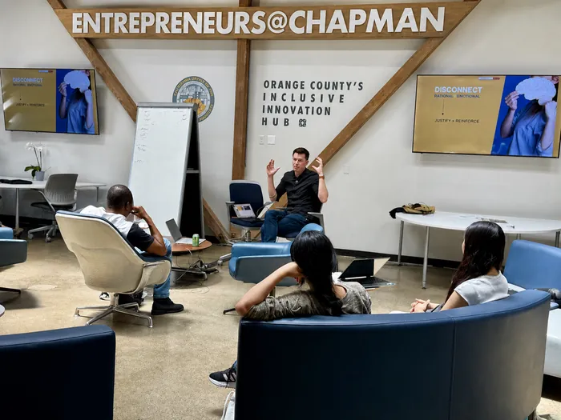
Preview unavailable. Open the high-resolution file.Chapman entrepreneurship workshop · facilitating, credible, documentary
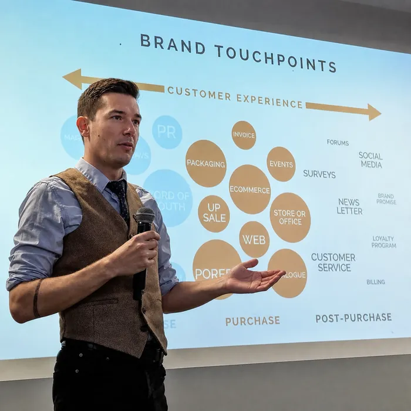
Preview unavailable. Open the high-resolution file.presentation room · authoritative, engaged, explanatory
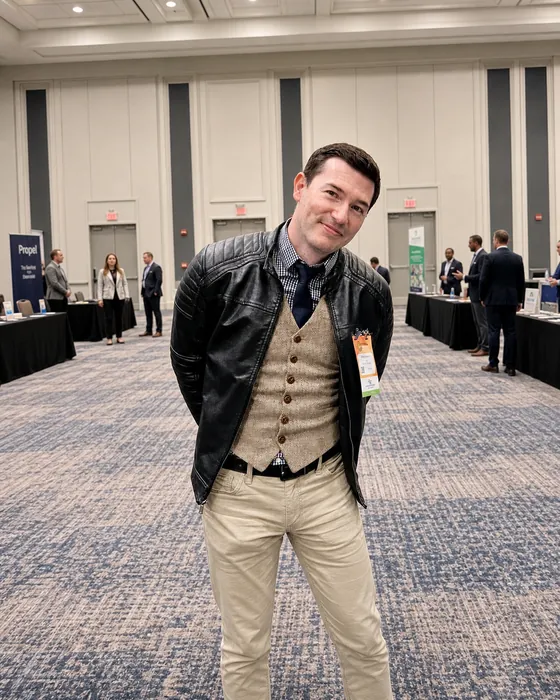
Preview unavailable. Open the high-resolution file.trade show · approachable, professional, distinctive
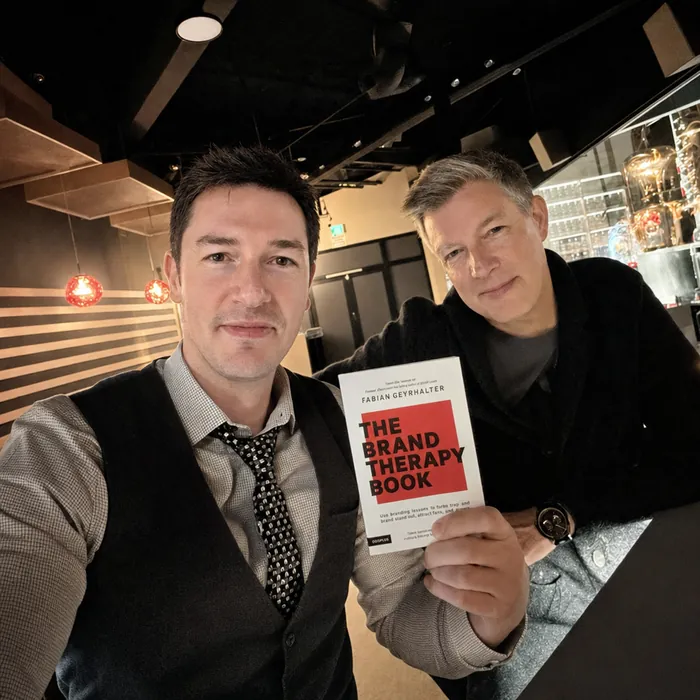
Preview unavailable. Open the high-resolution file.restaurant with Fabian Geyrhalter · credible, personal, celebratory
modern office lounge · calm, composed, approachable
mountain-view meeting · consultative, engaged, polished
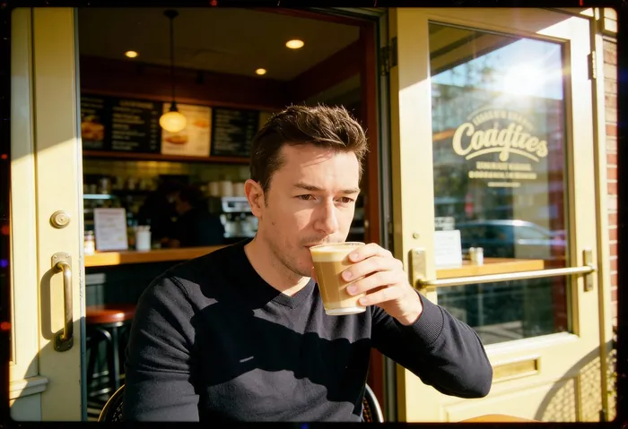
Preview unavailable. Open the high-resolution file.sunlit cafe · observed, casual, reflective
warm meeting table · strategic, collaborative, cinematic
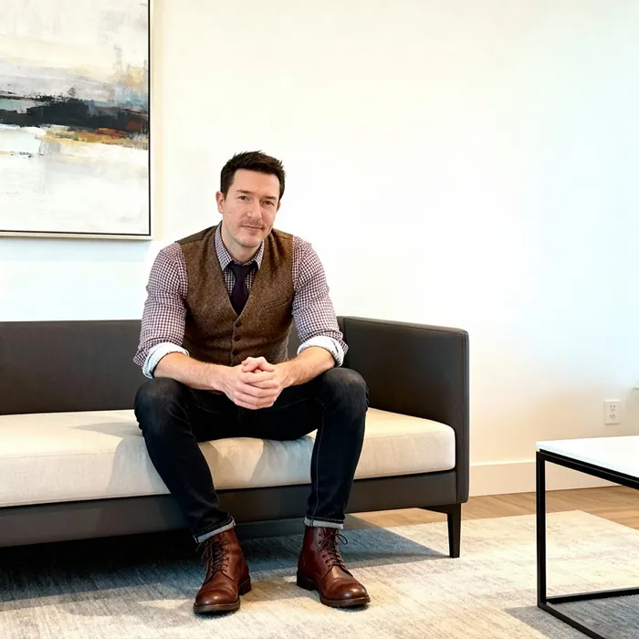
Preview unavailable. Open the high-resolution file.minimal lobby · relaxed, approachable, contemporary
dark studio · formal, direct, controlled
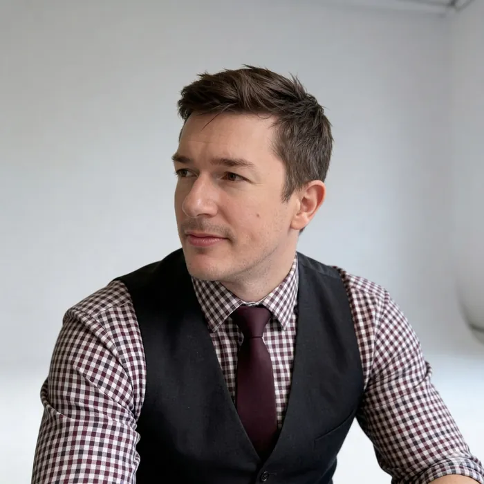
Preview unavailable. Open the high-resolution file.neutral studio · thoughtful, tailored, authoritative
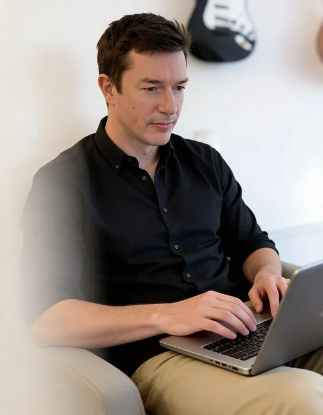
Preview unavailable. Open the high-resolution file.bright home workspace · focused, informal, capable
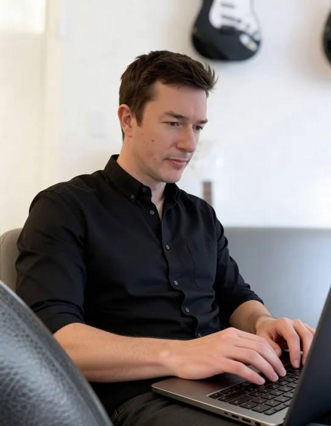
Preview unavailable. Open the high-resolution file.home office with guitar · creative, focused, relaxed
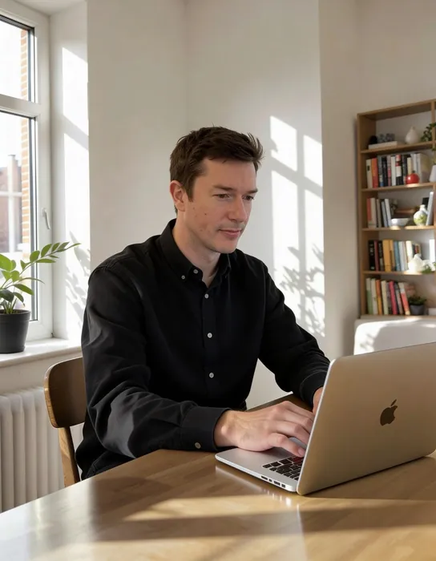
Preview unavailable. Open the high-resolution file.sunlit home table · quiet, focused, naturalistic
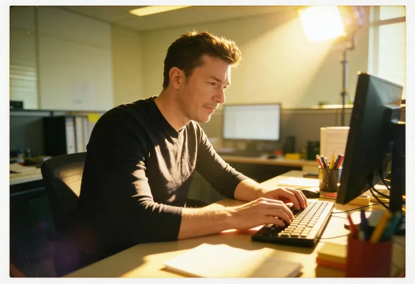
Preview unavailable. Open the high-resolution file.warm desktop office · focused, productive, cinematic
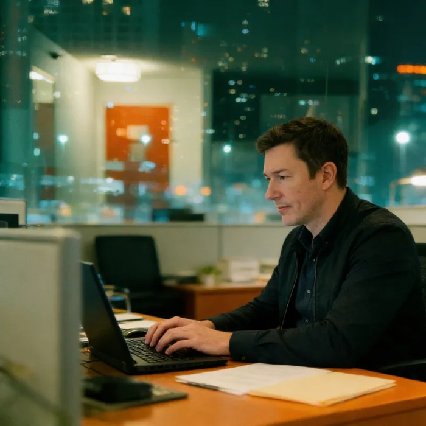
Preview unavailable. Open the high-resolution file.night city office · focused, serious, cinematic
Clear a filter or search for another context.